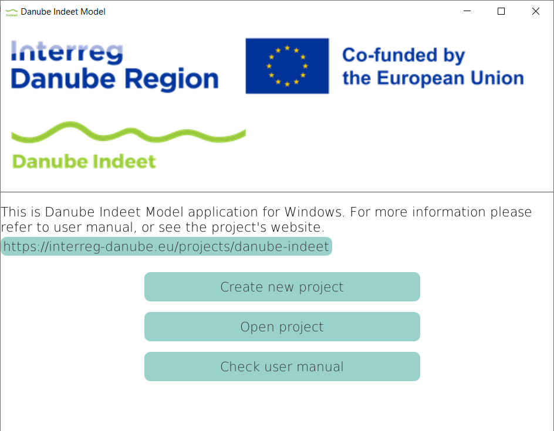
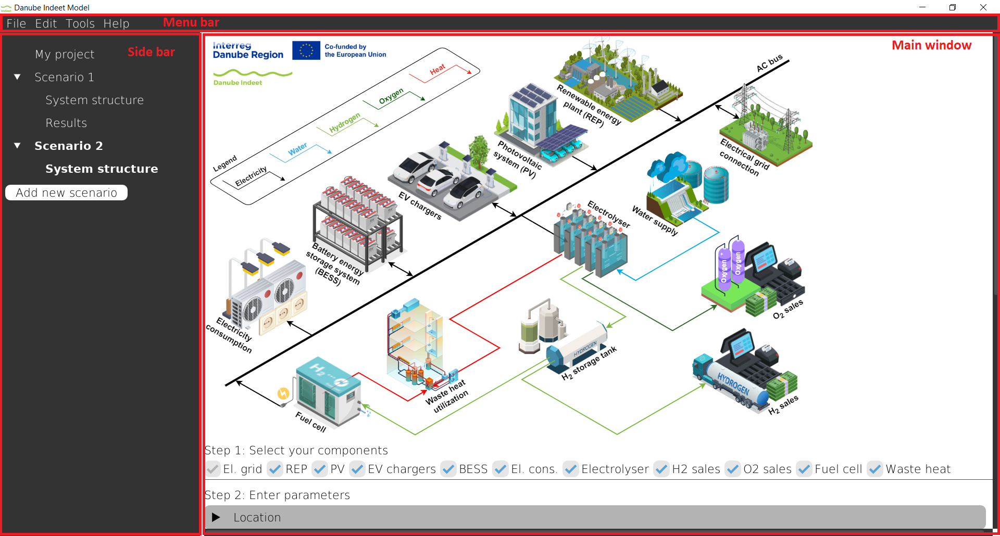
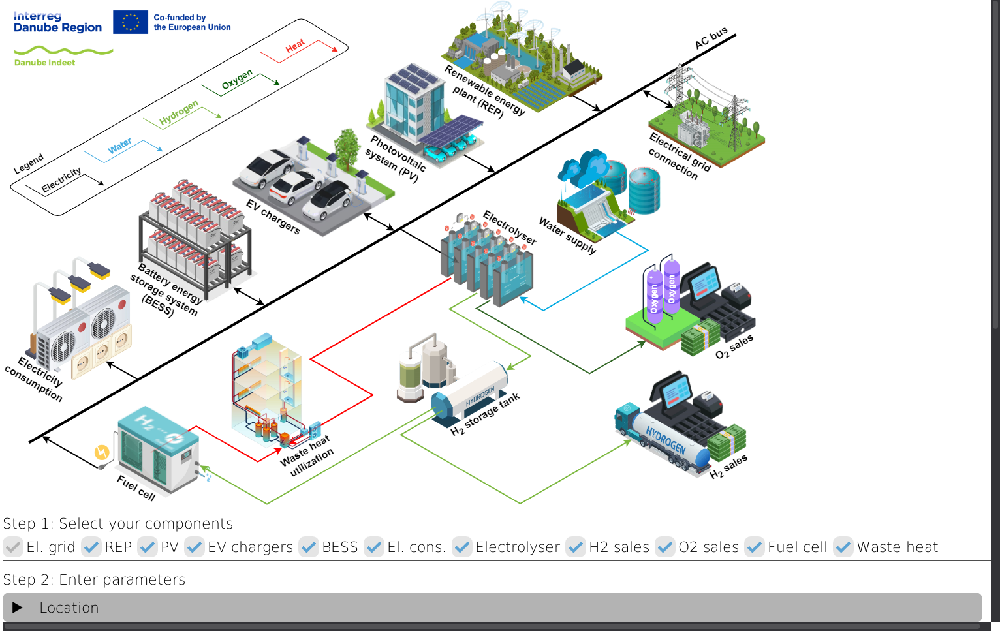
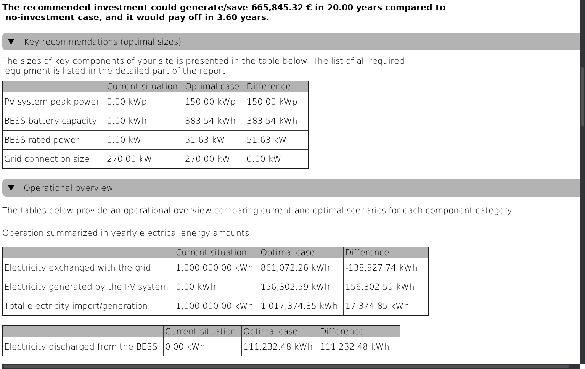

3 Interface overview
3.1 Keyword definitions
The DIM is organized around projects and scenarios. Understanding these terms is essential before using the tool. The following definitions explain the most important concepts used throughout the DIM and this user manual.
3.1.1 Project
A project represents one real-world investment case. It defines:
- The location of the site (geographical coordinates)
- The local conditions
- Any existing infrastructure already available at the site
You can think of a project as a container that holds all analyses related to one physical location. At any time, only one project can be opened in the tool.
Each project is saved as a separate .indeet file. A single project file can contain multiple scenarios.
Example: A municipality planning a transport and energy hub at an industrial zone would create one project for that location and then analyze different design options within it.
3.1.2 Scenario
A scenario represents one specific design and assumption set within a project. It includes:
- Selected technologies (e.g., PV, battery, electrolyser)
- Technical parameters (e.g., efficiencies, capacities)
- Economic parameters (e.g., electricity prices, investment costs)
- Policy or regulatory assumptions
The DIM performs the optimization separately for each scenario.
After the optimization is completed, a scenario contains:
- Input data (what the user defined)
- Optimization output (optimal sizes, operation schedule, financial indicators)
This allows you to compare different scenarios within the same project.
As an example you may create:
- Scenario A: High electricity price assumption
- Scenario B: Without battery storage included
- Scenario C: With investment subsidy
Each scenario produces its own results.
3.1.3 Existing infrastructure
Existing infrastructure refers to technologies that are already installed at the project location. It encapsulates all parameters of that technologies.
Examples:
- An existing PV plant with its grid connection and power generation capability
- An industrial plant with its grid connection and electricity consumption
- A hydrogen refueling station with its hydrogen storage tank and hydrogen demand
Instead of replacing them, the DIM:
- Keeps their current capacity
- Optimizes possible expansions
- Optimizes the operation of existing and new components together
3.1.4 Parameters
In the DIM, parameters (also referred to as input parameters) represent all user-defined data that describe a scenario. All parameters are configured in the System structure window of the selected scenario.
Certain parameters:
- Have default values (e.g., technical parameters of components),
- Are automatically populated based on selected location (e.g., rainfall amounts),
- Offer predefined values (e.g., electricity tariffs),
- Are mandatory to be entered by users.
Users can either keep predefined values or modify them according to the specific project assumptions. If required inputs are missing or inconsistent, the application will notify the user.
After optimization is executed, the parameters of that scenario become locked. To modify inputs, the scenario must be duplicated.
3.1.5 Optimization outputs
After running the optimization, the application generates optimization outputs, which represent the calculated results of the defined scenario. Optimization outputs include:
- Optimal installed capacities (e.g., PV size, BESS capacity)
- Optimal schedules of every component (e.g., grid import and export profiles, EV charging behavior)
- Financial indicators (e.g., NPV, ROI)
These outputs are available in the Results window of the scenario. They are presented in tables and in charts.
3.2 Welcome window
When you start the application, the welcome screen appears as shown in Figure 3.1.

With the welcome screen you have 4 options, i.e. buttons to click on:
- Create new project
- Open project
- Check user manual
Each option opens a different workflow within the application.
3.2.1 Create new project
By clicking on Create new project a new window appears as in Figure 3.2.

The window contains three text fields:
- Project location: This is the folder on your computer where the project file (
.indeet) will be saved. You can either type the folder path manually or click Browse… to select a folder. By default, the project location is your Desktop. - Project name: This is the name of your project. It will also be the name of the
.indeetfile. Two projects with the same name cannot exist in the same folder. - Full project path: This field shows the complete file path that will be created. It is generated automatically and cannot be edited directly. The format is:
PROJECT_LOCATION\PROJECT_NAME.indeet.
After entering the required information, click Create project. A new project file (.indeet) will be created in the selected location and project window will be opened. If a project with the same name already exists in that folder, the tool will display a notification.
3.2.2 Open project
By clicking on Open project, a file selection window appears. In this window, you can browse your computer and select an existing project file (.indeet) that you want to open.
Only folders and .indeet project files are displayed. Other file types are hidden to make selection easier and to prevent opening unsupported files.
After selecting the desired file and confirming, the project will be loaded into the application. You can then view, edit, or create scenarios within that project.
3.3 Project window
When a project is loaded (either newly created or opened from file), the Project window appears, as shown in Figure 3.3. This is the main working environment of the DIM. All scenario creation, parameter input, optimization, and result analysis are performed here.

The Project window consists of three main parts:
- Menu bar – located at the top of the window
- Sidebar – located on the left side
- Main window – the central and largest area
3.3.3 Main window
The Main window is the central and largest part of the Project window. It displays either the System structure view or the Results view of the currently selected scenario.
Which view is shown depends on what you select in the Sidebar.
- If you click System structure, the Main window displays all input parameters of the scenario.
- If you click Results, the Main window displays the optimization outputs (available only after a successful optimization).
This is the primary workspace of the application. All parameter definition, optimization control, and result analysis are performed here.
Examples of both views are shown in Figure 3.12 and Figure 3.13.


The detailed functionality of both views is explained in the following chapters.